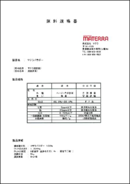
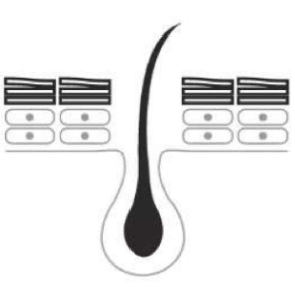

MATERRA POWDER
マテラパウダー
マテラ鉱石について

四国の中央構造線上付近には、300万年前の比較的新しい地層が存在し、その地層のごく一部の限られた場所からマテラ鉱石は採掘されます。
マテラ鉱石は火成岩の１種（流紋岩）で、愛媛県の特定箇所から産出される流紋岩にのみ、優れた遠赤効果やさまざまな効果があり非常に希少価値が高い天然石です。
この鉱石を100%使用したのが、世界で弊社だけの取り扱い原料である『マテラパウダー』です。
自社の工場にて独自の製法で製造しており完全な、MADE IN JAPAN の商材です。
トルマリン同様、高い放射率が特徴で、有効遠赤外線の放射により人体に好転的な効果を得ることが期待できます。
製造工程

マテラ鉱石の効果
上の図のように電磁波(光)は波長の長さによって区別され、この内0.74~1000マイクロメーターを赤外線といい中でも5~25マイクロメーターが人に強くいい影響を与える有効遠赤外線とされている。
マテラ鉱石も一般的に遠赤外線を多く放射されているといわれるブラックシリカ、トルマリンと同様に高い放射率を特徴としております。(※高い値での放射率5%程度の差は効果に影響されないことが判明しております。)
化粧品原料としてのマテラパウダー
１ 皮膚一次性刺激性試験
２ 連続皮膚刺激性試験
３ 感作性試験
４ 経口投与毒性試験
５ 口腔粘膜刺激性試験
６ 目粘膜刺激性試験
７ 復帰突然変異試験
８ 染色体異常試験
９ ヒトパッチ皮膚刺激性試験 40名
１０ 人累積刺激試験 50名
１１ 原体媒体中の安定性試験
GLP安全性試験11項目クリアなど多岐に渡る、安全試験を クリアしており、安全面にも考慮した商品となっています。
主成分のケイ素とその効果１
1940年からアメリカで疾学研究である『フラミンガム研究』が 行われております。
その研究では、ケイ素を摂取することにより、骨密度などに影 響が見られたと言う学術的な裏づけと共に論文が発表されております。
欧米では栄養補助食品として売られており、近年日本でも美容と健康に関する効果が期待されている素材のひとつです。
主成分のケイ素とその効果２
体の構築
人体の体内組織内のミトコンドリアがケイ素で構成されており、爪や髪などありとあらゆる部位に含まれておりますが、加齢と共にケイ素は減少します。
美肌効果
ヒアルロン酸やコラーゲンと結合する特性があり、美肌効果やエナメル質を強化します。
アンチエイジング
ケイ素は別名シリコンと呼ばれ非常に抗酸化作用が強く、細胞内を活性化することにより、新陳代謝が良くなります。
化粧品原料について
自主規格
商品概要
商品名
INCI名
表示名称
粒形
主成分
比重
産地
マテラパウダー
No11709 Rhyolite Powder
流紋岩末
14μmアンダー
ケイ素 60%以上
2.67
日本 愛媛県特定箇所
抗酸化作用
マテラパウダーには現在、美容の様々な分野で注目されているケイ素が70%と高い濃度で含まれております。
ケイ素は抗酸化作用(アンチエイジング)が強く、弊社もその作用に注目して研究しております。
パウダーの効果
右手にマテラパウダー、左手に市販のフェイスパウダーを塗布し、皮膚表面温度の変化を観察しました。
(摩擦での皮膚表面温度の上昇を防ぐため、化粧筆にて塗布)
マテラ吹付けコントロール
フェイスマスクに化粧水を染込ませ、10分装着した後はず してからの皮膚表面温度の変化を観察しました。
どちらの観察試験でも、マテラパウダーを使用した方に、皮膚表面温度の上昇に優位性を見ることが出来ます。
このことにより、マテラパウダーには皮膚表面温度を上昇させ、新陳代謝を促すことにより美肌効果が期待でき ます。
マッサージクリームなどに配合する事により、マッサージ効果をより高める・アイクリームに配合することにより、クマなど血行不良を改善するなどの効果が期待できます。
化粧品としての効果

毛穴の汚れは古い角質と皮脂、残ってしまったメイクなど。これらが酸化し、黒ずみの原因となります。
マテラパウダーは毛穴より小さい微粒子の為、毛穴の中の汚れを吸着し、高い洗浄力を期待できます。
皮脂や角質などの洗浄効果が高いので、女性だけではなく男性にもお勧めです。
体臭は古くなった皮脂からも発生しますので、体臭を押さえてくれる効果も期待できます。